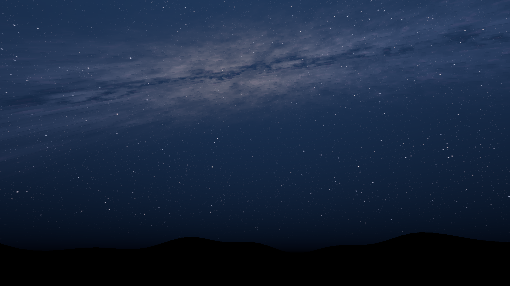
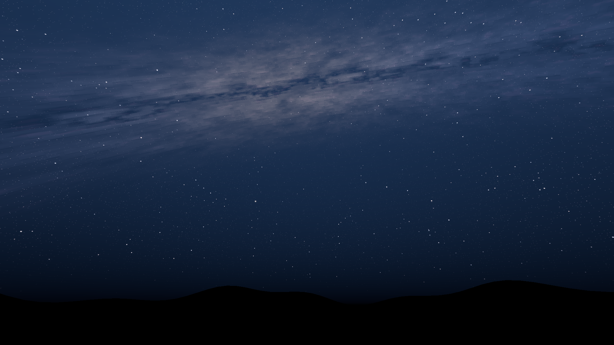
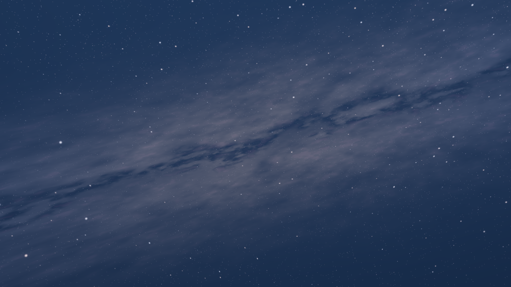
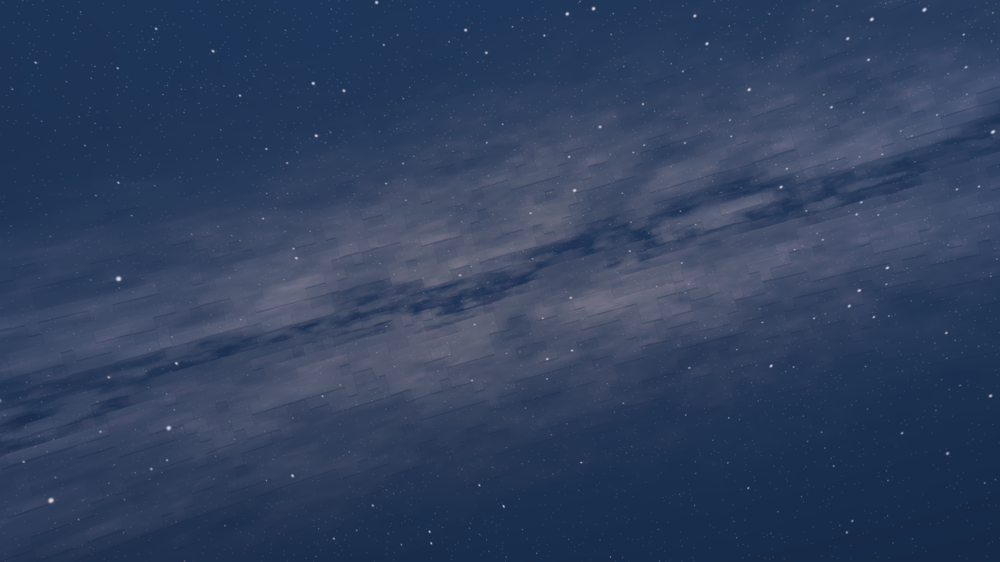

The latest version uses square cores for the scattered stars and constellations, retaining their colours and gentle twinkling.


Offline fixture, with a stand-in horizon. Closer view of the square stars.
Connected plateaus, recessed dust and narrow shaded steps. The relief follows the band's own cloud shapes, using the material art's extrusion principle. The previous curved colour mosaic is removed.
Offline renders of the production sky shader. The smooth horizon is a stand-in, not game terrain. This has not been checked beside live night-time terrain. Both sides use the same camera, palette and exposure.
The same sky at a 38-degree field of view. Compare the relief against the smooth band, with identical star groupings on both sides.

